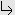

|
Formula 1.0.0 | ||||||||
| PREV CLASS NEXT CLASS | FRAMES NO FRAMES | ||||||||
| SUMMARY: NESTED | FIELD | CONSTR | METHOD | DETAIL: FIELD | CONSTR | METHOD | ||||||||
Object
Number
hirondelle.formula.Decimal
public final class Decimal
Represent an immutable number, using a natural, compact syntax. The number may have a decimal portion, or it may not.
This class exists for these reasons:
BigDecimal class
This class is especially suited for representing money.
For the most common operations, Decimal uses BigDecimal to perform calculations, and is thus not subject to the
rounding errors which are very common when floating-point primitives are used.
Decimal objects are immutable. Many operations in this class return new Decimal objects.
As usual, operations can be performed on two items having a different number of decimal places. For example, these operations are valid (using an informal, ad hoc notation) :
10 + 1.23 = 11.23 10.00 + 1.23 = 11.23 10 - 1.23 = 8.77 (10 > 1.23) => trueThis corresponds to typical user expectations.
The eq(Decimal) is usually to be preferred over the equals(Object) method.
The equals(Object) is unusual, in that it's the only method sensitive to the exact
number of decimal places, while eq(Decimal) is not. That is,
10.equals(10.00) => false 10.eq(10.00) => true
Various methods in this class have unusually terse names, such as lt for 'less than', and gt for 'greater than', and so on. The intent of such names is to improve the legibility of mathematical expressions.
Example :
if ( amount.lt(hundred) ) {
cost = amount.times(price);
}
Several methods in this class are overloaded to perform the same operation with various types:
This class extends Number. This allows other parts of the JDK to treat a Decimal just like any other
Number.
| Field Summary | |
|---|---|
static Decimal |
E
An approximation to Euler's number, to 15 decimal places. |
static Decimal |
MINUS_ONE
Convenience constant. |
static Decimal |
ONE
Convenience constant. |
static Decimal |
PI
An approximation to the number pi, to 15 decimal places. |
static RoundingMode |
ROUNDING
The default rounding mode used by this class (half-even). |
static Decimal |
ZERO
Zero Decimal amount, a simple convenience constant. |
| Constructor Summary | |
|---|---|
Decimal(BigDecimal aAmount)
Constructor. |
|
| Method Summary | |
|---|---|
Decimal |
abs()
Return the absolute value of the amount. |
int |
compareTo(Decimal aThat)
Implements the Comparable interface. |
Decimal |
div(Decimal aDivisor)
Divide this Decimal by a divisor. |
Decimal |
div(double aDivisor)
|
Decimal |
div(long aDivisor)
|
double |
doubleValue()
Required by Number. |
boolean |
eq(Decimal aThat)
Equals (insensitive to number of decimals). |
boolean |
eq(double aThat)
|
boolean |
eq(long aThat)
|
boolean |
equals(Object aThat)
Equals, sensitive to scale of the underlying BigDecimal. |
float |
floatValue()
Required by Number. |
static Decimal |
from(double aAmount)
Convenience factory method. |
static Decimal |
from(long aAmount)
Convenience factory method. |
static Decimal |
from(String aAmount)
Convenience factory method. |
BigDecimal |
getAmount()
Return the amount as a BigDecimal. |
int |
getNumDecimals()
Return the number of decimals in this value. |
boolean |
gt(Decimal aThat)
Greater than. |
boolean |
gt(double aThat)
|
boolean |
gt(long aThat)
|
boolean |
gteq(Decimal aThat)
Greater than or equal to. |
boolean |
gteq(double aThat)
|
boolean |
gteq(long aThat)
|
int |
hashCode()
|
int |
intValue()
Required by Number. |
boolean |
isInteger()
Return true only if this Decimal is an integer. |
boolean |
isMinus()
Return true only if the amount is negative. |
boolean |
isPlus()
Return true only if the amount is positive. |
boolean |
isZero()
Return true only if the amount is zero. |
long |
longValue()
Required by Number. |
boolean |
lt(Decimal aThat)
Less than. |
boolean |
lt(double aThat)
|
boolean |
lt(long aThat)
|
boolean |
lteq(Decimal aThat)
Less than or equal to. |
boolean |
lteq(double aThat)
|
boolean |
lteq(long aThat)
|
Decimal |
minus(Decimal aThat)
Subtract aThat Decimal from this Decimal. |
Decimal |
minus(double aThat)
|
Decimal |
minus(long aThat)
|
Decimal |
negate()
Return this amount x (-1). |
Decimal |
plus(Decimal aThat)
Add aThat Decimal to this Decimal. |
Decimal |
plus(double aThat)
|
Decimal |
plus(long aThat)
|
Decimal |
pow(Decimal aPower)
Raise this Decimal to a Decimal power. |
Decimal |
pow(double aPower)
This implementation uses Math.pow(double, double). |
Decimal |
pow(int aPower)
Raise this number to an integral power; the power can be of either sign. |
Decimal |
round()
Round to an integer value, using the default ROUNDING style. |
Decimal |
round(int aNumberOfDecimals)
Round to 0 or more decimal places, using the default ROUNDING style. |
Decimal |
round(int aNumberOfDecimals,
RoundingMode aRoundingMode)
Round to 0 or more decimal places, using the given rounding style. |
Decimal |
round2(Decimal aInterval)
Round a number to the nearest multiple of the given interval. |
Decimal |
round2(double aInterval)
|
Decimal |
round2(long aInterval)
|
static Decimal |
sum(Collection<Decimal> aDecimals)
Sum a collection of Decimal objects. |
Decimal |
times(Decimal aFactor)
Multiply this Decimal by a factor. |
Decimal |
times(double aFactor)
|
Decimal |
times(long aFactor)
|
String |
toString()
Renders this Decimal in a style suitable for debugging. |
| Methods inherited from class Number |
|---|
byteValue, shortValue |
| Methods inherited from class Object |
|---|
clone, finalize, getClass, notify, notifyAll, wait, wait, wait |
| Field Detail |
|---|
public static final RoundingMode ROUNDING
public static final Decimal ZERO
Like BigDecimal.ZERO, this item has no explicit decimal.
In most cases that will not matter, since only the equals(Object) method is sensitive to
exact decimals. All other methods, including eq(Decimal), are not sensitive to exact decimals.
public static final Decimal ONE
public static final Decimal MINUS_ONE
public static final Decimal PI
public static final Decimal E
| Constructor Detail |
|---|
public Decimal(BigDecimal aAmount)
aAmount - required, any number of decimals.| Method Detail |
|---|
public static Decimal from(String aAmount)
Instead of :
Decimal decimal = new Decimal(new BigDecimal("100"));
one may instead use this more compact form:
Decimal decimal = Decimal.from("100");
which is a bit more legible.
public static Decimal from(long aAmount)
public static Decimal from(double aAmount)
public String toString()
Returns the amount in the format defined by BigDecimal.toPlainString().
toString in class Objectpublic boolean equals(Object aThat)
That is, 10 and 10.00 are not
considered equal by this method. Such behavior is often undesired; in most
practical cases, it's likely best to use the eq(Decimal) method instead.,
which has no such monkey business.
This implementation imitates BigDecimal.equals(java.lang.Object),
which is also sensitive to the number of decimals (or 'scale').
equals in class Objectpublic int hashCode()
hashCode in class Objectpublic int compareTo(Decimal aThat)
Comparable interface.
It's possible to use this method as a general replacement for a large number of methods which compare numbers: lt, eq, lteq, and so on. However, it's recommended that you use those other methods, since they have greater clarity and concision.
compareTo in interface Comparable<Decimal>public BigDecimal getAmount()
public int getNumDecimals()
public boolean isInteger()
public boolean isPlus()
public boolean isMinus()
public boolean isZero()
public boolean eq(Decimal aThat)
Return true only if the amounts are equal.
This method is not synonymous with the equals method,
since the equals(Object) method is sensitive to the exact number of decimal places (or, more
precisely, the scale of the underlying BigDecimal.)
public boolean eq(long aThat)
public boolean eq(double aThat)
public boolean gt(Decimal aThat)
Return true only if 'this' amount is greater than 'that' amount.
public boolean gt(long aThat)
public boolean gt(double aThat)
public boolean gteq(Decimal aThat)
Return true only if 'this' amount is greater than or equal to 'that' amount.
public boolean gteq(long aThat)
public boolean gteq(double aThat)
public boolean lt(Decimal aThat)
Return true only if 'this' amount is less than 'that' amount.
public boolean lt(long aThat)
public boolean lt(double aThat)
public boolean lteq(Decimal aThat)
Return true only if 'this' amount is less than or equal to 'that' amount.
public boolean lteq(long aThat)
public boolean lteq(double aThat)
public Decimal plus(Decimal aThat)
public Decimal plus(long aThat)
public Decimal plus(double aThat)
public Decimal minus(Decimal aThat)
public Decimal minus(long aThat)
public Decimal minus(double aThat)
public static Decimal sum(Collection<Decimal> aDecimals)
aDecimals - collection of Decimal objects.
If the collection is empty, then a zero value is returned.public Decimal times(Decimal aFactor)
public Decimal times(long aFactor)
public Decimal times(double aFactor)
public Decimal div(Decimal aDivisor)
If the division results in a number which will never terminate, then this method
will round the result to 20 decimal places, using the default ROUNDING.
public Decimal div(long aDivisor)
public Decimal div(double aDivisor)
public Decimal abs()
public Decimal negate()
public Decimal round()
ROUNDING style.
public Decimal round(int aNumberOfDecimals)
ROUNDING style.
aNumberOfDecimals - must 0 or more.
public Decimal round(int aNumberOfDecimals,
RoundingMode aRoundingMode)
aNumberOfDecimals - must 0 or more.public Decimal round2(Decimal aInterval)
aInterval - must be greater than zeropublic Decimal round2(long aInterval)
public Decimal round2(double aInterval)
public Decimal pow(int aPower)
Special cases regarding 0:
aPower - is in the range -999,999,999..999,999,999, inclusive. (This reflects a restriction on
the underlying BigDecimal.pow(int) method.public Decimal pow(double aPower)
Math.pow(double, double).
public Decimal pow(Decimal aPower)
This method calls either pow(int) or pow(double), according to the return value of
isInteger().
public double doubleValue()
Number.
Use of floating point data is highly discouraged. This method is provided only because it's required by Number.
doubleValue in class Numberpublic float floatValue()
Number.
Use of floating point data is highly discouraged. This method is provided only because it's required by Number.
floatValue in class Numberpublic int intValue()
Number.
intValue in class Numberpublic long longValue()
Number.
longValue in class Number
|
Formula 1.0.0 | ||||||||
| PREV CLASS NEXT CLASS | FRAMES NO FRAMES | ||||||||
| SUMMARY: NESTED | FIELD | CONSTR | METHOD | DETAIL: FIELD | CONSTR | METHOD | ||||||||